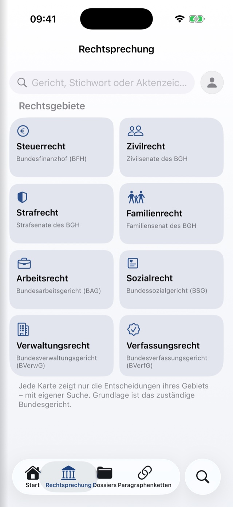

DiamLaw
2,211 statutes from 16 jurisdictions. Offline.
DiamLaw is a reader for statutes and case law, made for everyone who works with the law day to day: lawyers, trainee lawyers, students and tax advisers. Besides German and European law, DiamLaw carries the statutes of fourteen further jurisdictions – from Austria and Switzerland to the United States. All texts sit entirely on your device – no signal needed, no account, and no DiamApps server involved. Whatever you highlight, note down and collect stays with you as well.
2,211 statutes from 16 jurisdictions – on the device
Germany contributes 145 federal statutes – from the BGB (Civil Code), StGB (Criminal Code), ZPO (Code of Civil Procedure) and HGB (Commercial Code) through the whole of tax, employment and social law – and the EU another 72 legal acts, from the Treaties and the Charter of Fundamental Rights to the GDPR and the VAT Directive. Then come Austria, Switzerland, the United Kingdom, the Netherlands, Sweden, Finland, Spain, France, Denmark, Norway, Luxembourg, Estonia, Romania and the United States – from the ABGB, the Swiss Code of Obligations and the Burgerlijk Wetboek through the Code civil and the Código Civil to the United States Code. Everything sits on the device, so the library works the same on a plane, in a courthouse basement or anywhere without a signal as it does at home.
- Every statute shows the amendment status given by the source and the date it was retrieved; the version history compares changes word by word
- Each jurisdiction on its own, chosen by flag and grouped by area of law – never mixed
- Whole statutes and individual provisions can be marked as favourites separately
- Plus the decrees and guidelines of the German tax administration: UStAE, AEAO, EStR, LStR, KStR, GewStR and ErbStR with their official notes
- Free of charge: the five main German codes – GG, BGB, StGB, ZPO and HGB – and all 175 Estonian statutes; the rest of the library comes with Pro
A working desk, not a wall of tiles
The first screen is not a menu but your desk. “Continue reading” opens the provision you read last, exactly where you left off. Below it sit the cards you actually need – and DiamLaw hides empty sections by itself.
- Cards for favourites, bookmarks, dossiers, chains of provisions, case law, tools and the study mode
- Your most recent notes and highlights appear directly underneath
- Ten sections, freely arrangeable – you decide the order
- Bookmarks: save a provision with one tap and find it again through a section of its own
Read like a book – cite like a case file
In DiamLaw you read statutes whichever way suits you: swipe horizontally from provision to provision, turn pages with a real page-curl as in a printed code, or scroll continuously. A section slider along the right edge takes you through an entire code in seconds, the table of contents searches the full text of the open statute, and a quick switcher keeps your recent and favourite codes at hand.
- Press and hold the text or double-tap it – the familiar selection handles and loupe appear, with “Highlight” and “Note” placed ahead of the system actions
- Six highlight colours in the Diam gemstones, and you can give each colour a meaning of its own (“disputed”, “exam-relevant”)
- Every highlight and note remembers its citation down to the sentence (“§ 2 sentence 1 BGB”) and shows it with a text excerpt in the overviews
- Four ways to copy straight from the selection: the text alone, the text with its citation, the citation alone (“§ 15 (1) sentence 2 UStG”) or an app link that leads right back to the spot
- “Read highlights only” collects every highlight in a statute in document order as a reading list of its own – with citation, colour meaning and a jump back to the provision
- Read aloud with abbreviations spoken in full, paragraph by paragraph; the speed takes effect at once; if DiamLaw moves to the background or the device locks, reading pauses and resumes from the same spot in the control bar
A PDF you can file away
A provision, a whole judgment or a highlighted passage becomes a properly typeset A4 PDF at the press of a button: Georgia in justified text, a running header, honest “page N of M” numbering and the source in every footer.
Bookmarks and favourites
Favourites work on two levels – for whole statutes and for individual provisions. Both show up in the library, on the home screen and in the widget.
Guides on board
Explanatory pages from the first steps through to iCloud and backups, questions and answers, a comparison of Basic and Pro, and a version history that describes every change.
Finding, not searching
Typing “§ 15 UStG” or “Art. 3 GG” is enough – DiamLaw recognises the citation and jumps straight there, in each country’s own style as well: “§ 1295 ABGB”, “Art. 41 OR”, “s. 14 SGA 1979”, “art. 1240 C. civ.” or “26 U.S.C. § 61(a)”. The same search finds statutes by title and abbreviation, legal terms and nicknames such as “Bienenparagraph”, and runs a full-text search for each jurisdiction – ranked by relevance, with every match highlighted. Recent search terms stay within reach.
- Citation scanner: point the camera at a handout, a brief or an official notice and the provision opens at once. Recognition runs on the device, no picture is taken and none is stored
- Case law is reachable straight from the search as well
In iPhone search
Every bundled statute can be found from the home screen, right down to the individual provision. The index is built once in the background and stays on the device; only the bundled statutory texts go into it, never your notes or highlights. It can be switched off in the settings.
Siri and Shortcuts
Three actions are available in Apple’s Shortcuts app: open a statute, open a provision, open a section – with a picker listing every statute, and they work even when DiamLaw is not running.
Three widgets
“Continue reading” opens the provision you read last, “Favourite statutes” offers up to four shortcuts, and “Flashcards” shows the cards due today – including as a ring on the lock screen. The widgets only read a small snapshot that the app writes itself.
Read, cite and keep decisions of the federal courts
Decisions of the Federal Constitutional Court and of the BGH, BFH, BAG, BSG, BVerwG and the Federal Patent Court can be searched and read inside the app – freely by keyword or through eight practice-area cards, each showing the federal court responsible. The source is the Federal Government’s open legal information portal, queried without a key and without signing in.
- Judgments read just like the statutes, with official paragraph numbers as the citation layer
- Press and hold a paragraph and you get the finished citation: “BFH, judgment of 27 March 2019 – V R 61/17, para. 14”
- Provisions quoted in a judgment are tappable and open the statute
- Any decision you want to keep stays readable offline – if you highlight a decision or add a note, the app saves the text along with it automatically
- Highlights and notes in judgments are anchored to the exact paragraph number, and a whole judgment can be shared as a PDF
- From any open provision, a menu entry leads to the decisions that cite exactly that section – searched as the official citation form as an exact phrase, narrowed to a single subsection if you wish

From the statutory text to exam knowledge
The study mode draws on the same statutory texts as the reader – every citation is tappable and leads into the provision it comes from.
51 exam schemes
From a claim for the purchase price through self-defence and constitutional complaints to the order of examination in VAT law: 951 checkpoints with definitions, exam tips, a difficulty rating and clearly flagged points of dispute. More than 1,300 statutory references are tappable.
88 definitions
Core terms from civil, criminal, public, tax, employment and procedural law – each with a precise definition and a note on whether it comes from the statute, from the courts or from academic doctrine.
Flashcards from your own highlights
Any highlight can become a card: the citation on the front, your text on the back. Cards from the definitions and the exam schemes come on top. Repetition follows the Leitner system with five boxes (1, 3, 7, 14 and 30 days), with “difficult” and a defer option.
Study statistics
How your cards are spread across the five boxes, what is due in the coming week and your success rate – shown as charts rather than columns of figures.
52 chains of provisions
How do you get from “taxable” to “exempt” for an export supply? 52 curated chains of reasoning across ten areas – civil law, VAT, tax procedure, commercial law, employment law, civil procedure, administrative law and more – each with the chain spelled out, a short form for citing and tappable references.
Chains of your own
Enter a title, the reasoning and the provisions – DiamLaw links the sections it recognises as you type. That way your own collection grows alongside the bundled chains.
Deadlines with a calculation you can follow
Enter the trigger date, pick the deadline – done. 19 ready-made presets cover the classics: appeal, revision, unfair-dismissal claim, objection to a tax assessment, withdrawal, limitation periods, notice of defects in a commercial sale and more. Any other deadline can be entered freely.
- Below the result stands the full calculation under §§ 187, 188 and 193 BGB, with citations
- The federal state is selectable, because § 193 BGB turns on the public holidays that apply in the place concerned – all 16 states are included
- Result and calculation can be shared as text, for the case file or the office calendar
A dossier for every case
One dossier per matter or topic – with a name, a colour and an icon – holding the provisions that belong to it. You can add a whole provision, a subsection or a single sentence; one tap leads back into the statutory text.
Notification when a statute changes
DiamLaw tells you when one of your favourite or recently read federal statutes is amended – up to 20 German titles are watched; there is no such notice for the other jurisdictions. It checks roughly once a day, without any DiamApps server and without personal data.
Deep links into your own notes
Every provision has an address of its own. That lets you link straight to the passage in the statute from your own notes, from an email or from a shortcut.
Explained on the device
Have any provision explained in plain language, or a long judgment condensed into holding, facts and reasoning. The language model is Apple’s built-in one and runs entirely locally: no text leaves the device, there are no running costs or subscription fees, and it works in aeroplane mode.
- Every result carries a clear note that automatically generated text can be wrong
- Only the original wording is authoritative – and it stays one tap away
- A device with Apple Intelligence switched on is required
Just the way you like it
DiamLaw shares the design layer of all DiamApps – and carries it right into the statutory text. Anyone who reads for hours should get the view that suits them.
The reading view down to the detail
Twelve calm reading papers (six light ones from white to sepia and six dark ones down to night blue and graphite, plus “automatic”), six bundled typefaces (San Francisco, New York, Charter, Georgia, Palatino and SF Rounded), font size from 13 to 28 point in fine steps, line and paragraph spacing, an adjustable page margin and separate styling for the provision heading. Every change shows up instantly in the live preview.
Text colours by role
For statutes and judgments, body text, secondary text and provision numbers can be coloured separately – in the six Diam gemstones, each with a light and a dark version of its own. The statutory text itself always stays fully legible.
Colours and transparency
Accent, symbol and card colours – card colours even per section – from the six Diam gemstones: diamond, sapphire, ruby, emerald, gold and silver, in DiamLaw in deliberately softer tones; plus separate sliders for the opacity of cards and text.
Your own background image per section
Home, Highlights, Notes, Case law, Study mode and Tools each get their own image from your photo library – with a freely adjustable opacity so the text stays readable.
Twelve app icons
DiamLaw’s § mark comes in six gemstone colours – diamond, ruby, sapphire, emerald, gold and silver – and each of them in two series: as a night version on a deep dark background, which includes the standard Diamond Night icon, and in the DiamApps look on a warm white background.
Navigation to match how you work
Three functions of your choosing sit in the tab bar at the bottom. Everything else is one swipe from the left edge away in the sidebar, whose order you set yourself – and the ten sections of the home screen can be arranged freely too.
Light, dark or system
DiamLaw follows the system appearance or stays fixed in light or dark mode, exactly as you prefer.
German and English
The interface is fully available in German and English and follows your device’s language on first launch. Statutes appear in the language of their source, and almost every EU legal act in English as well; judgments, exam schemes and definitions stay in the German original, because there every word counts.
Small introductory hints
Short notes show you where things are the first time round – and they can be reset at any point in the settings.
One switch, the same state everywhere
Highlights, notes, favourites, dossiers, offline judgments, study progress, background images, design and settings sync between your devices through your private iCloud account if you wish – one switch under Settings → iCloud & local backup is all it takes, with no restart. On top of that, a backup writes the same data to a file that you store yourself – that one belongs to Pro.
Your data stays yours
DiamLaw needs no sign-in and no account, and it uses no DiamApps server. Everything that syncs lives solely in your personal iCloud. You can create a profile with a name, a birthday and a photo, and it stays purely on the device. The statutory texts come from each country’s legal databases – among them “Gesetze im Internet” (the statute portal of the German Federal Ministry of Justice), EUR-Lex, RIS, Fedlex, legislation.gov.uk, Légifrance, Lovdata and uscode.house.gov – and the decisions from the Federal Government’s legal information portal. Every statute included is listed in the app with its amendment status and retrieval date, and the source is shown again beneath each provision and each judgment.
Basic and Pro
Downloading and Basic are free. DiamLaw Pro is a one-time purchase – no subscription, and no advertising in either edition. The purchase covers iPhone, iPad and Mac under the same Apple ID.
Basic – free for good
The five main German codes – GG, BGB, StGB, ZPO and HGB – and all 175 Estonian statutes offline, the search across those statutes, every design setting, and 30 highlights, 30 notes and one dossier.
Pro – €0.99 once
Every other jurisdiction, the German tax administration’s decrees and guidelines, case law, chains of provisions, the study mode with exam schemes, definitions and flashcards, the deadline calculator, the Apple Intelligence features, unlimited highlights, notes and dossiers, and backup and export.
Try it free for 14 days
The trial unlocks every Pro feature for 14 days. It costs €0, ends by itself and is never charged – once per Apple ID.
At a glance
- Devices
- iPhone and iPad running iOS or iPadOS 26 or later; Mac running macOS 26 or later as a Mac app of its own, with a sidebar, reading pane, menu bar and keyboard shortcuts.
- Orientation
- Portrait only on iPhone.
- Content
- 2,211 statutes from 16 jurisdictions, among them 145 German federal statutes and 72 EU legal acts; plus 12 decrees, guidelines and notes of the German tax administration, 52 chains of provisions, 51 exam schemes, 88 definitions and 19 deadline presets.
- Connectivity
- Not needed for statutes, highlights, notes, study mode, the deadline calculator or the PDF export. The case-law search and the amendment check require an internet connection.
- Account
- None. No tracking, no advertising, no DiamApps servers.
- Languages
- Interface in German and English; statutes in the language of their source, almost every EU legal act in English as well; judgments, exam schemes and definitions in German.
- Version
- 1.0.2, as of November 2026.
Trademarks and sources
Apple, Apple Intelligence, Siri, iPhone, iPad, Mac and iCloud are trademarks of Apple Inc.; these names describe only what our app works with. The origin and licence of the statutory texts are set out below under “Sources and licence”. Only the official gazettes of each jurisdiction are authentic.
To be honest
These are the limits of the current version – and we would rather name them here than have you discover them later:
- The statutory texts sit on the device by design. They are therefore updated with the next app update rather than overnight; the amendment notification tells you that something has changed, but it does not deliver the new text straight away.
- The version history begins with the first legal status recorded: there are no older versions, and comparisons show the changes since that status.
- No state law, no commentaries or textbooks. As for administrative guidance, the decrees and guidelines of the Federal Ministry of Finance are included, nothing else.
- Case law, the deadline calculator, chains of provisions, exam schemes, definitions and the change notice exist for German law only. The statutes of the other jurisdictions are consolidated versions in the language of their source – DiamLaw translates nothing itself.
- Case law requires an internet connection and comes from a pilot phase of the Federal Government’s legal information portal: the body of data is still growing – essentially decisions from 2010 onwards – and the interface may change. Judgments you have opened or saved do remain readable offline.
- The route from a provision to the judgments searches for the official citation form as an exact phrase. It finds decisions that cite the provision – not necessarily every decision that interprets it.
- The Apple Intelligence features require a device with Apple Intelligence switched on. Automatically generated explanations and summaries can contain errors.
- The deadline calculator works under §§ 187–193 BGB. It expressly does not examine service of documents, suspension, reinstatement or any diverging special rules – responsibility for the deadline remains with you.
- The exam schemes reflect the customary structure and replace neither a textbook nor a commentary.
- In 16 passages, sentences run together because the error is already present in the official XML from the Federal Office of Justice. DiamLaw deliberately invents no character inside a statutory text.
- Cards have a fixed corner radius – colours, opacity, background images, typefaces and arrangement can be adjusted; the edge shape cannot.
- On iPhone the app runs in portrait orientation only.
Legal notice
DiamLaw provides statutory texts, court decisions and study material. The app is not a legal service within the meaning of the Rechtsdienstleistungsgesetz (the German Act on Legal Services) and does not replace advice from a lawyer in an individual case. No warranty is given for the currency or completeness of the content; the official gazettes are authoritative.
Sources and licence: As official works under § 5 UrhG (the German Copyright Act), German statutory texts are in the public domain; they come from “Gesetze im Internet” (Federal Ministry of Justice), where the consolidated versions are not official versions. The decrees, guidelines and notes come from the official handbooks of the Federal Ministry of Finance. The EU legal acts come from EUR-Lex, © European Union, 1998–2026; their re-use is governed by Decision 2011/833/EU (CC BY 4.0). The other jurisdictions: Austria from the Legal Information System of the Republic of Austria (RIS, Federal Chancellery, CC BY 4.0), Switzerland from Fedlex (Swiss Federal Chancellery), the United Kingdom from legislation.gov.uk (The National Archives, Open Government Licence v3.0), the Netherlands from the Basiswettenbestand (wetten.overheid.nl, KOOP, CC0), Sweden from the open data of the Riksdag (Källa: Sveriges riksdag), Finland from Finlex (Ministry of Justice, CC BY 4.0), Spain based on data from the Agencia Estatal Boletín Oficial del Estado (BOE), France from Légifrance (LEGI data of the DILA, Licence Ouverte), Denmark from Retsinformation (Civilstyrelsen), Norway from Lovdata (Stiftelsen Lovdata, NLOD 2.0), Luxembourg from Legilux (Central Legislation Service, CC BY 4.0), Estonia from the Riigi Teataja (Ministry of Justice and Digital Affairs, CC BY-SA 4.0), Romania from the Portal Legislativ (Ministry of Justice) and the United States from the United States Code (Office of the Law Revision Counsel) and the National Archives (public domain). These are non-official consolidated versions; only the official gazettes are authentic. The decisions come from the Federal Government’s legal information portal. The full source notes are in the app under Settings → “Sources & disclaimer”.
This is an English translation. In case of doubt, the German version of this page is authoritative.